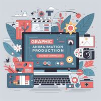

未来已来：AI动画技术的崛起与影响
- 近年来，我们目睹了人工智能（AI）在各个领域的快速发展和突破。而其中，AI在动画创作领域的应用更是引起了广泛的关注和兴趣。随着AI动画技术的崛起，我们正站在一座连接创意与科技的桥梁上，探索着一个全新的虚拟世界。本文将深入剖析AI动画技术的核心原理，探讨其对传统动画制作的颠覆和影响，并展望AI动画在未来的潜力。
- 
AI动画技术的核心原理
- AI动画技术的核心在于机器学习和深度学习算法的应用。通过对海量的数据进行训练和学习，AI系统能够模仿人类艺术家的创作过程，并创造出令人惊叹的动画作品。AI算法能够分析图像、声音和运动数据，进而生成高度逼真和流畅的动画效果。这种技术突破了传统动画制作的限制，让艺术家们能够以更高效、更创新的方式表达自己的创意。